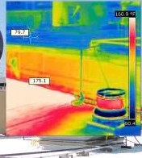

Serving commercial property owners, property managers, facility managers, and roofing contractors across Southeast Michigan.
We survey your entire commercial roof from the air with the DJI Matrice 4T, using thermal and visual imaging. It’s faster and safer than a full walk of the roof, and it covers every section — including areas that are hard to reach or easy to overlook on foot.
Best for owners and managers who need a true picture of a roof’s condition before budgeting, buying, selling, or planning repairs.
Water trapped under a roof surface doesn’t always show as a leak — until the damage is done. Thermal imaging helps reveal temperature differences that point to wet insulation and trapped moisture below the surface, so problem areas can be marked, checked, and repaired before they spread.
A clear assessment of the roof’s overall health: its condition today, the areas that need attention, and the priorities that matter most. No jargon for its own sake — just what a manager or owner needs to make a decision.
Every inspection ends with a report you can use: photos, marked problem areas, findings in plain language, repair priorities, and your AIR Roof Score. It’s written so you can take it into a budget meeting and get a decision — not so you need a roofer in the room to translate it.
Every roof we inspect gets a score from 1 to 100, with a color band that shows its condition at a glance. One number makes it easier to compare buildings across a portfolio, set repair priorities, and budget with confidence.
Inspections only help if the problems get fixed. We handle commercial roof repairs and maintenance work, led by an experienced 2-man crew, as required by MIOSHA. If your inspection turns up a Fair, Poor, or Critical roof, we can quote the repair work from the same findings — no second inspection, no starting over.
One inspection is a snapshot. Repeat inspections are a plan. We can re-inspect your roofs over time, update your Roof Scores, and help you track how conditions change — so maintenance money goes to the roofs that need it most, in the right order.
Every inspection is flown with the DJI Matrice 4T, built for commercial thermal work. Its 640×512 thermal camera reveals trapped moisture and wet insulation under the roof surface. Its 48MP visual cameras capture sharp detail of every section. A laser rangefinder and integrated RTK positioning mean every finding is mapped precisely, so repair crews know exactly where to go.

A thermal view of a roof surface — warmer areas show up in red and yellow. Thermal image: Alexander Cua, CC BY-SA 3.0, via Wikimedia Commons.
Start with one inspection. We’ll give you the findings, the priorities, and a score you can budget against.